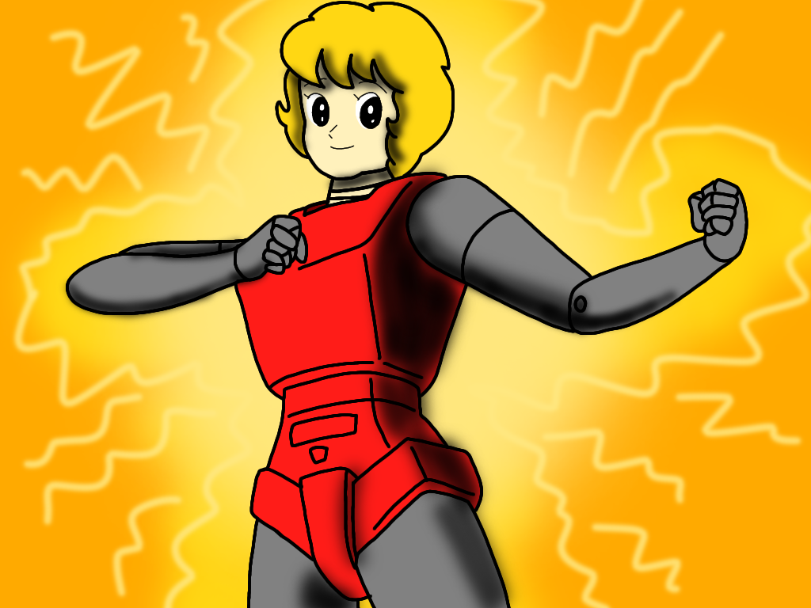

Odcinek 1
W tym odcinku pilotażowym, główny bohater 'K.S' tworzy robota o imieniu Sally Yumeno (ORG. ROBO-Sally | Na podstawie postaci Mitsuteru Yokoyama).
Krzysztof S.
Engines Of Eight (1973 - 1977)
Pinokio (Scena Narodzin Pinokia)
TUGS - Sizzle Reel (1988)
Andrzej Trzaskowski (Intro)
Hyot Curtis
Harry Breuer (Fusee Dans Le Ciel - Intro)
Ten odcinek był wyemitowany z okazji 58 Rocznicy z serii Anime/Manga "Sally Czarodziejka" Mitsuteru Yokoyama.
[5/12/2024]